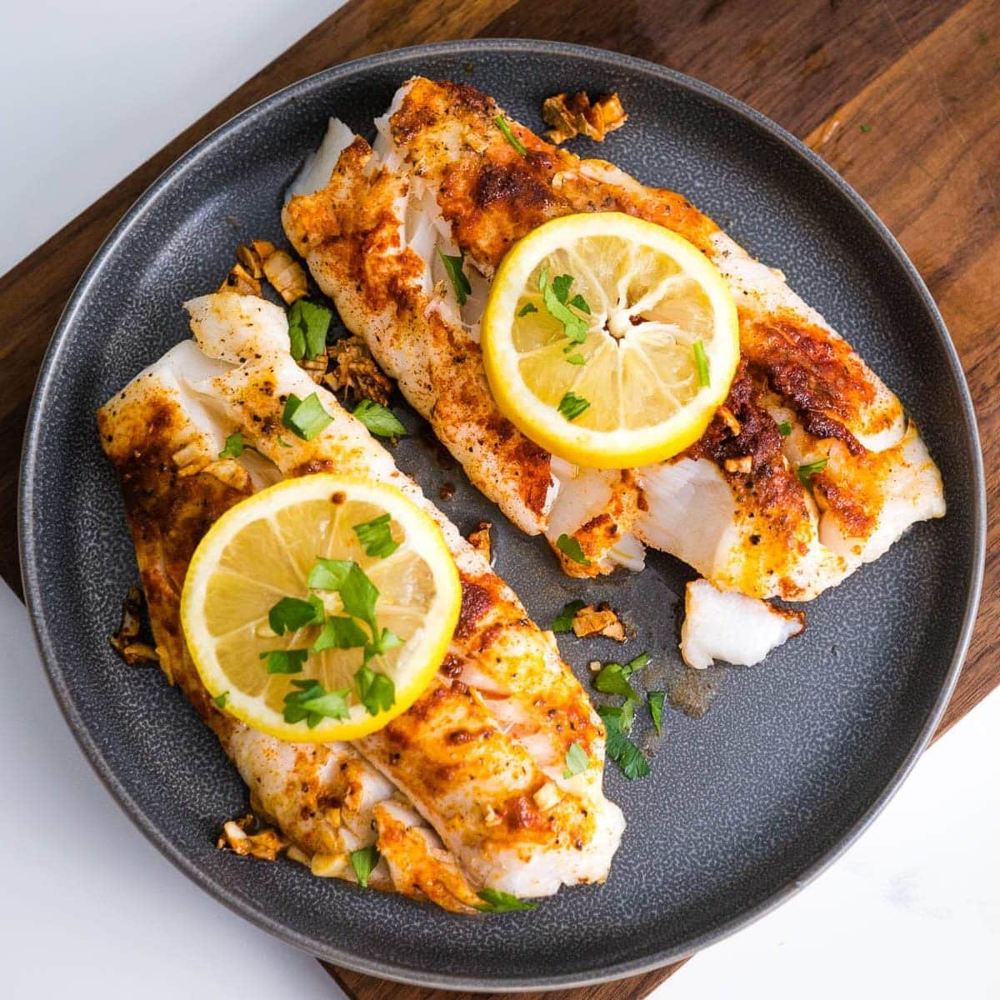

Air Fryer Cod

Description
This air fryer cod recipe couldn't get any easier! It starts with frozen cod fillets dipped in egg wash and ranch-seasoned panko. The result is piping-hot cod fillets that are both crispy and flaky!
Ingredients
- 1 large egg
- 1 pinch salt
- 3/4 cup Panko bread crumbs
- 2 tablespoons ranch seasoning mix
- 4 4oz frozen cod fillets
- Nonstick cooking spray
Steps
- Preheat an air fryer to 400 degrees F (200 degrees C) for 5 minutes. Line the air fryer basket with a perforated parchment round.
- Meanwhile, whisk egg in a shallow dish until lemon colored and frothy. Season with a pinch of salt. Combine panko and ranch seasoning in another shallow bowl.
- Dip cod fillets into egg mixture, then into panko mixture to coat. Carefully place breaded cod into the prepared basket and spray with nonstick spray.
- Air-fry in the preheated air fryer for about 8 minutes. Carefully flip fillets, spray again with nonstick spray, and air-fry until cod flakes easily with a fork, about 7 more minutes.